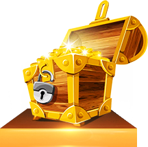

RECEIVE GIFTS
- Home page
- Like and win
- BFG fragment
- Popuparity poll
- Features

Treasure System Introduction
-
-
Treasure Raiders - Treasure System Introduction
Characters in Treasure Raiders can equip 1 weapon, 3 outfit equipment, and 3 battle equipment. Besides the character's basic attributes, the weapon and 3 outfit equipment will greatly increase a character's attributes. It should be noted that the amount of attributes a character can gain by leveling up is quite limited; equipment is the key to really increasing attribute values.
Although battle equipment does not increase a character's attributes, it can increase battle potential. Battle potential is the standard for measuring a hunter's actual strength, but there are differences in how this potential is actually increased depending on the different character roles. For example, for Chalie, getting Enhanced Ice will greatly increase battle potential, but will do very little for Mary's battle potential.
Character equipment quality is categorized into 4 grades: Newbie (white), Advanced (blue), Elite (purple), and Artifact (orange). The higher the quality of the equipment, the better its base attributes and the more room it has for growth. Also, different pieces of the same equipment will have differences attribute values.
Every kind of equipment can be obtained by collecting fragments. Upon reaching a set level, each player will receive enough fragments to exchange for 1 advanced weapon. After this, players can join Dungeon Raids to gather more equipment fragments to exchange for advanced equipment.
-
Treasure Raiders - Troupe Introduction
In the world of Treasure Raiders, hunters often must join forces and complete dangerous missions together. As such, hunters began gathering into small groups, which were the predecessors of the now well-known Hunter Troupes. The Society strongly encourages hunters to create and join official Troupes. Joining a Troupe is not only a way to find more treasure hunting companions, but is also the way to challenging missions that a hunter wouldn't normally be able to complete on his/her own. Hunters will not only receive great rewards for creating a Troupe, but will also learn many practical treasure hunting skills.
Hunters from around the world join Troupes to work towards a common purpose and create their very own treasure hunter family.
[1. Unlocking Troupes]
Hunter Troupes unlocks at player level 11, and players may create their own Troupe at level 25. Players will receive the corresponding tutorial missions:
After completing the tutorial missions, players may join a Troupe. However, creating a Troupe requires level 25 along with a large sum of coins.
[2. Managing a Troupe]
Hunter Troupes unlocks at player level 11, and players may create their own Troupe at level 25. Players will receive the corresponding tutorial missions:
After completing the tutorial missions, players may join a Troupe. However, creating a Troupe requires level 25 along with a large sum of coins.
In the Troupe menu, Troupe members with the required privileges can change their Troupe Badge, manage Troupe applications, and can edit other Troupe members' roles.
In the Rankings menu, players may view the current Hunter Rankings. If a player chooses to join a different Troupe, the contribution points he/she had from the previous Troupe will be halved. Therefore it is recommended that hunters join a Troupe that they can grow together in rather changing Troupes all the time.
[3. Troupe Events]
Troupes have access to exclusive events that only members of the same Troupe can participate in:
The following are the different types of Troupe Events:
1. Troupe Contracts: daily missions that can be accepted every day at the Enigma Office. Troupe contracts are different than the regular daily missions and have star ratings. The higher the star rating, the better the rewards!
2. Daily (Troupe) Targets: troupe members complete missions to reach the corresponding daily targets. After the daily target is achieved, all the troupe members will receive a reward!
3.Troupe Party
Troupes not only provide hunters with lots of exclusive events, but also give hunters a group which they can call home. The time of highest Troupe activity will most certainly be during the daily Troupe Party event from 20:00 to 20:10.
During the Troupe Party, members can share delicious food that they collected while during troupe events. Hunters will not only gain EXP from the food, but will also increase the rate at which all troupe members gain experience during the Troupe Party. Don't hog all the good food for yourself, enjoy this fun moment together with other members!
4. Treasure Beacon
Use the treasure whistle in the Troupe base to attract monsters! The hunter who summons the monsters will immediately receive a set amount of gold. After all the monsters have been defeated, members whose DPS exceeded a set percentage will receive be able to participate in grabbing a present, which contains random amounts of gold rewards!
5. Troupe Order
This is a designated item to be turned in to Troupe Base's Materials Officer. Turn in this item to receive gold, silver, wrenches, and other rewards. In other words, you may use this event to exchange any surplus equipment or materials you have for rewards!
-
Treasure Raiders - Treasure System Introduction
Characters in Treasure Raiders can equip 1 weapon, 3 outfit equipment, and 3 battle equipment. Besides the character's basic attributes, the weapon and 3 outfit equipment will greatly increase a character's attributes. It should be noted that the amount of attributes a character can gain by leveling up is quite limited; equipment is the key to really increasing attribute values.
Although battle equipment does not increase a character's attributes, it can increase battle potential. Battle potential is the standard for measuring a hunter's actual strength, but there are differences in how this potential is actually increased depending on the different character roles. For example, for Chalie, getting Enhanced Ice will greatly increase battle potential, but will do very little for Mary's battle potential.
Character equipment quality is categorized into 4 grades: Newbie (white), Advanced (blue), Elite (purple), and Artifact (orange). The higher the quality of the equipment, the better its base attributes and the more room it has for growth. Also, different pieces of the same equipment will have differences attribute values.
Every kind of equipment can be obtained by collecting fragments. Upon reaching a set level, each player will receive enough fragments to exchange for 1 advanced weapon. After this, players can join Dungeon Raids to gather more equipment fragments to exchange for advanced equipment.
-
Treasure Raiders - Equipment Progress Introduction
Players will unlock the Treasure System after reaching a specified level. One player can equip 2 Innate Treasures and 3 treasures as they choose. Innate Treasures increase the most important attributes for different classes, and the treasures that hunters may choose can be used to synergize with class characteristics. When 2 treasures that belong to the same set are equipped, a treasure skill will be unlocked, which can be used in battle.
Treasures can greatly increase attributes, including but not limited to Attack Power, Defense Power, HP, Healing, etc. Also, after collecting treasures of the same set, treasure skills can be used, which provides various control, regen, and escape abilities. There are also rare purple and orange treasures, which provide a stronger treasure skill. For example, Eternal Mead, which keeps your hero from dying for a time even after a fatal blow, or the Indescribable Guitar, which strengthens your items each time they are used.
The main ways to strengthen your treasures are Upgrades and Star Upgrades. The material required for normal upgrades is Treasure Energy Crystals, which can be obtained from the Fight Club and Treasure Trials events. Hunters can randomly receive Open Treasures of various rarities in different game modes. Treasures with a low star-rating can undergo Star Upgrades, which requires treasure shards depending on the treasure you are trying to Star Upgrade. Treasure shards can be obtained in the Fight Club and Hunter Championship events, or from some chests purchased in the store.
Different classes can choose treasure skills that suit their needs best, for example, a DPS focused Charlie can use the skill Earth's Embrace to increase his overall survivability. A more tanky character like Drake can use the Fetter Force Field treasure skill to slow enemy movement speed and assist friendly DPS.
This is a system that does not rely on topping-up, all treasure-related items cannot be traded and most items required for growing in-game is dropped via different game modes. Both paying and non-paying users must use energy to progress in this system and there is no way to simply pay and get ahead.
-
Treasure Raiders - World Territories Introduction
Ark of Wonders
The moving capital of the Treasure Raiders Society has special privileges, allowing it to be able to fly over any country. The Ark of Wonders is the place where hunters accept missions, exchange information, and rest to prepare for the next mission. It is said that the ark is the earliest location of the Society's headquarters. To this day, aspiring hunters must first complete the mission of "Finding the Ark of Wonders" to enroll as a hunter. It can be said that the Ark of Wonders is where all hunters' dreams begin.
Mission Area
Hunters can accept a variety of missions from the Society Counter, the pool on the forward deck is for relaxing, and mysterious missions can be accepted from the cold, scary girl near the bow.
Dispatch Area
Here, hunters must request permission to dispatch from Captain Aran, who provides assault ships to carry hunters to the mission areas. You may also purchase Arena Tickets from the Arena Counter on the lower deck located near the side of the ship, allowing you to participate in a series of Arena events.
Commercial Area
Not only can you find Dr. Lucky, the weapons and items manufacturer here, you can also find the girl who only arrived on the Ark of Wonders a short time ago that has already become everyone's idol, Lilly. Listening to the gripes of middle-aged men might give you more useful information than you'd expect. From below the Commercial Area's deck, you can enter the Hunter Lodge, which is restricted to Hunter Troupe members.
Hunter Lodge
Sit down for a drink and spend the afternoon sharing information with other treasure hunters. This is the Hunter Lodge, an exclusive place for Troupe members where many aspects of the hunter life wait to be discovered by you.
Ruins of Rock
A tomb administered by the Pharaoh Rock III. Rock III has been awakened by the Ancient World to act as an "agent," taking charge of the treasures inside this tomb. He is currently working hard with his band to become famous as a lead singer and rock guitarist.
In the Ruins of Rock area, not only can you enjoy the authentic desert climate, you can also magnificent and mysterious remnants of the ancient civilization. But you must be careful not to disturb the chaotic inhabitants here who have no way to vent their anger other than eating you.
Harry Boddom's Laboratory
This is the laboratory of the treasure energy scientist, Harry Boddom. He is sort of like the Tony Stark of the Treasure Raiders world!
However, the laboratory seems to have taken a strange turn, as sightings of groups of unidentified people have been sighted around the lab. The doctor known for working in solitude has curiously been replaced by long-winded, frowning lab assistants. Vine can be seen growing from the lab's windows, along with tentacles that cordially spray poison as they wave at you passing by.
Dracula's Castle
The recommended expedition point in Hunter Weekly appears to only be an old, run-down manor. However, after crossing the cemetery and pumpkin patches in front of the castle, perhaps another world is waiting for you inside?!
It's good to have the spirit of adventure, of course, but as a guest, you must be careful of your manners and mindful of the master. You wouldn't want anything bad to happen if there is no way to leave the house until dawn...
-
Charles Hunter
"Let's go, Mr. Voltaire!"
A young machinist aspiring to become a treasure hunter. His character is gentle and kind, but a bit slow when it comes to understanding relationships...
When Charlie was 10 years old, his father left after giving Charlie a mysterious gauntlet. He has never heard from his father since. To find out the truth behind his father's disappearance, Charlie grew up to become an apprentice treasure hunter on a journey to the Ark of Wonders with his loyal companion, Mr. Voltaire. Perhaps there are more friends for Charlie to meet along the way...
Character Role
Charlie infused the Power Gauntlet on his right arm with treasure energy, giving the gauntlet "elemental" properties and making it no ordinary weapon! With varying elemental types, Charlie can be the both team's cool "Frost Control" or the explosive "Electric Zapper."
Using the ice element as his primary weapon and equipment, Charlie wields freezing and slow effects, allowing him to stop the enemy in their tracks at a crucial moment. He may even interrupt boss abilities and control the flow of the battle. In PvP, Charlie can limit the enemy's ability to move, providing him and his teammates an opportunity to unleash their DPS.
With electric weapons and equipment, Charlie can attack large amounts of enemies, which is effective when being surrounded or needing to clear a path through enemies. In PvP, Charlie will have high DPS and burst damage capable of granting a quick victory over the enemy.
Character Weapons
·Elemental Rifle
A steady and reliable DPS weapon, after using his Power Gauntlet to charge up, Charlie can fire bullets that have ice elemental properties.
·Plasma Gun
The electric arcs that are emitted from the Plasma Gun conduct electricity between enemies in range, dealing AOE damage. If the enemy is trying to bully you with their numbers, let the Plasma Gun teach them how to behave!
Battle Equipment
·Ice Grenade
Freezes enemies at the center of its explosion radius and causes enemies in range to have 5 layers of "frost" effect. This causes movement speed to be slow and increases chances of crit when dealt ice damage.
·EM Grenade
When the grenade explodes, it will create an area of EM charge, dealing continuous electric attacks to enemies in range.
·Voltaire's Frost Cannon
Summon Mr. Voltaire with his cannon. Each time the cannon hits an enemy, it will add a "Frost" status, slowing movement speed and increasing crit chances from ice damage. "Frost" status can be stacked up to 5 times.
·Voltaire's E Turret
Summon Mr. Voltaire to operate an electrical tower that will continuously attack nearby units, dealing a paralysis effect.
·Holo Projector
Summon an illusion to assist in battle. The illusion's HP and attack values are a little lower than yours.
·Power Gauntlet
A mysterious weapon left behind by Charlie's father. It charges up by absorbing treasure energy and fires a bolt of lightning once fully charged.
-
Drake
"Did you just try to touch my butt?!"
Appearing to be just the average unreliable womanizer wearing a woman's cowboy hat, Drake is actually an S level Society hunter! Deep down though, he seems to be keeping some important matter to himself.
On the way to the City of Hunters, the transport that Charlie was riding on came under attack from the Plunder Platoon. Luckily, Drake was also riding that transport, who then used his experience to help command Charlie in battle, defeating the Plunder Platoon attackers. It didn't take long for Drake's unreliable side to become apparent, but Charlie continued to help him through a slew of challenges together. After exposing the Plunder Platoon's plot to bring about the Fall of Civilization, not only did facts about Drake's past begin to surface, Charlie was able to find more clues regarding his father...
Character Role
Drake is considered the team's tank, soaking up most of the incoming damage with his huge HP and defense. His Adrenaline and Exoskeleton equipment ensure his survivability while his Smash Hammer effectively controls enemy bosses and disrupts enemy DPS.
When training Drake to be a tank, hunters should focus on increasing his HP, DEF, and elemental resistance. Remember to prioritize these three attributes when modifying items as well. Of course, attack and movement speed should also be taken into consideration when preparing Drake for PvP game modes.
Character Weapons
To let Drake's ability to absorb damage really shine, hunters can try equipping Drake's Shotgun or Heavy Machinegun as a weapon together with items like Rocket Boots, Smash Hammer, Adrenaline, Exoskeleton, and Chainsaw Tornado.
·Shotgun: A weapon that tears through enemies at close range. Combined with Drake's undeniably good looks, your enemies will most certainly despise you.
·Heavy Machineguns: Guns that put out massive single-target damage and makes iron walls look like paper! The one minor setback is that movement speed is slowed when attacking, and healing takes more time.
·Rocket Boots: Use the speed of your rocket boots to blast forward, dealing massive damage to any enemies hit along the way.
·Smash Hammer: swing your massive hammer into the ground, stunning nearby units and dealing a set amount of damage.
·Adrenaline: believe in the miracles of overwhelming strength and receive a metal bodyfor a short time. The moment you transform, nearby enemies will be knocked back, your bullets will be more effective, and you will receive a large amount of HP for a short duration.
·Heroic Leap: Drake jumps high into the air and then smashes into the specified location, dealinghigh damage and increasing Drake's DEF.
·Exoskeleton: summons an outer shell and deals large AOE damage each time Drake smashes the ground. Drake's Exoskeleton can help him absorb a large amount of damage.
·Chainsaw Tornado: Drake starts spinning with a chainsaw until he becomes like a tornado, dealing AOE damage and disrupting nearby enemies.
-
Harry Potten
“ヾ (o ° ω ° O ) ノ”
Harry Boddom was originally an expert on treasure research, both rich and handsome, and quite the playboy. But after his arch rival managed to find a way to transform him into a baby, he began to reflect back on his life. As a single, 10 month old baby, Harry pilots a mech that he created and has now become a treasure hunter, looking for a way to return to his former self.
Character Role
Dr. Harry is able to switch between DPS and DEF capabilities. His tough mech provides him with reliable survivability and he has various items to help bolster his defense, allowing him to charge ahead of the team. At the same time, Harry can use close-range flamethrowers or long range rifles to dish out DPS. Harry is a well-rounded tank and damage dealer.
"Defense Line" allows Harry to deal consistent and considerable DPS, and his heat-seeking rockets will definitely upset the enemy. Coupled with Harry's blinding Flashbang and high DEF, high definitely serves an important role on the battlefield. In PvP, his survivability and versatility give him considerable combat potential.
The "Damage Build" primarily consists of the flamethrower's AOE damage. Similar to how Charlie can use ice or electrical damage, Dr. Boddom can use fire elemental damage to add a burning effect to the enemy. Along with items like Fuel Thrower, Air Support, etc., playing as Dr. Boddom will give the satisfying feeling of bombarding the enemy with damage. In PvP, be sure to level up the burning effects for powerful results.
Character Weapons
·Akimbo Rifles
A steady and reliable single-target DPS weapon that can shoot at range. This weapon is capable of dealing with any situation and is the first pick for hunters that like a good fight!
·Flamethrowers
A lethal weapon that was rebuilt from tools to get rid of insects, capable of dealing massive damage to large numbers of enemies at close range. Remember, you must get closer...
Character Items
·Flashbang
A modified form of the flashbang grenade used by police forces that blinds affected units. Who woulda guessed that even robot dog eyes made of titanium alloy can be blinded...
·Frag Shield
Generate a shield to block damage for yourself that explodes either upon taking too much damage or when its time limit is reached, dealing damage to nearby enemies.
·Ring of Fire: Spray a penetrating type of fire on nearby enemies that continues burning until the end.
·Missile Array
Fire seeker missiles from the Missile Array located on Dr. Boddom's mecha that follow any enemy with a heat signature and fry them to a crisp.
·Defensive Force Field
Casts a force field around the user that bounces back any enemies that draw near to it. Allies within the force field will receive a set amount of damage reduction.
·Air Support
Failing to stop the Fall of Civilization caused the Society to greatly increase support for its treasure hunters. Simply call the Society for support to bombard the area in front of you.
-
Mariko and Mary
"Mama always said that no matter what the situation, it's important to act like a lady... Now get your filthy hands off of me you pervert!"
The "monster" inside.
When she is Mariko, she is just a shy archaeologist, rushing about to different archaeological digs to complete her homework. When she is Mary, she is a ruthless treasure hunter with a fiery temper with a single mission: find out the truth about Operation TS_07 from 10 years before. By complete chance, Mariko was saved by Charlie, and she has been in love with Charlie ever since. However, she can never seem to find the right moment to tell him. There are many twists and turns on the road called love, but Mary has absolutely no interest in Charlie at all, and simply orders Charlie around to complete her missions.
Character Role
An explosive girl that blows away any enemy that gets in her way; possesses high DPS potential. Whether using a "damage build" to annhilate large groups of enemies, or a "focused build" to take down bosses, she is always an essential pick for any team that needs to deal damage.
The "damage build" primarily consists of Auto Rifles along with grenades and missles, capable of dealing massive damage to groups of enemies. The very sound of her Gatling Gun will strike fear into her enemies. Her shield is capable of blocking damage and make up for her lack of high HP. In PvP, if you unleash her DPS at the right moment, you will make quick work of any enemy in your way.
The "focused build" primarily consists of the long-range Sniper Rifle that allows her to take out enemies from a distance, along with Octopus Shurikens, and Spider Mines to keep enemies from getting too close. Her ultimate single-target weapon, the Rupturator, is a great choice against bosses. In PvP, using her superior range to stay at a distance and advancing slowly is the key to victory.
Character Weapons
·Assault Rifle
A steady and reliable single-target DPS weapon that can shoot at range. This weapon is capable of dealing with any situation and is the first pick for hunters that like a good fight!
·Sniper Rifle
Fires on the target area from a distance and deals massive damage after tapping and holding to charge up the weapon. Projectiles from this weapon are capable of hitting all enemies along the way to the target, making it great for sweeping away crowds of enemies!
Battle Equipment
·Frag Grenade
Toss a grenade that explodes and deals large damage, leaving the blast area burning with fire.
·Spider Mine
Bury a couple of Spider Mines automatically track enemies.
·Octopus Shuriken
Throw 3 darts that damage and silence the enemy. If the darts do not hit any walls or obstacles, they will return after reaching their maximum range, dealing their attack effect to enemies hit along the way.
· Reaper
Temporarily switch your weapon for the Reaper Rocket Launcher until you run out of rocket ammo. You'd better make those 3 shots count!
·Gatling
Temporarily switch your weapon for the Gatling Gun, taking care of any enemies you might have accidentally left standing.
·Rupturator
Use this energy beam weapon to fire a penetrating laser beam, continuously dealing large damage to any enemies in your path.
-
Silver Seeker
"There is no mission impossible for me to complete!"
When she is wearing the cape, she is the rising star of the Hunters Society. No one knows her true identity because she always completes missions alone. Without the cape, she is a noble girl born into a rich family whose grandfather was once president of the Society. However, her grandfather was forced to quit that position because of the failure of Operation TS_07, and he never revealed the truth behind the incident. To restore her family's name, she has become a treasure hunter incognito and is on her own mission to investigate Operation TS_07.
The Silver Seeker has a prideful attitude and despite her polite words, she quite enjoys patronizing others. Her work ethic covers up her frail heart and actually desires to be supported by others in the team.
Character Role
Always equipped with a variety of medical items, Silver Seeker excels at healing other team members. Depending on different situations, Silver Seeker can choose between "buff build" for healing teammates and increasing their battle potential, or the "healing build," which increases survivability.
When choosing the "buff build," Silver Seeker should primarily equip her Hand Cannon and Amphetamines. When she uses her hand cannon to attack enemies, it will leave behind a healing circle which heals nearby allies, essentially taking care of two birds with one stone. Amphetamines will greatly increase teammate's damage output for a short duration and are the signal for the team to concentrate their firepower on the enemy. In PvP, the Silver Seeker's survivability is her greatest weapon.
When choosing the "healing build," Silver Seeker doesn't have any DPS capabilities, so it is typically a more PvE oriented build. Her MedGun has exponential healing capabilities compared to her Hand Cannon and can let her teammates focus on DPS without worrying about taking too much damage. MedBots and her other Meds can help strengthen her healing effects.
Character Weapons
·Hand Cannon
An elegant and noble weapon that uses special bullets capable of damaging the enemy while healing her allies. However, it is said that the only difference between these bullets and others is that they added some tea powder inside???
·MedGun
The MedGun shoots out a healing wave that can heal multiple allied units simultaneously. Please note that the MedGun has no damage effect on the enemy.
Character Items
·Energy Grenade
It was once thought that there was little purpose for such a weak grenade, but it instead has found its place among medics on the battlefield. These grenades are capable of flying far at a slow speed, dealing a set amount of damage to enemies hit along the way.
·MedBots
Summon a MedBot and it will automatically lock onto and follow the most wounded ally, leaving you carefree until daybreak.
·EM Shield
The whole team will gain a layer of shields for a short duration and movement speed will be greatly increased.
·Meds
Silver Seeker will create an AOE healing effect, quickly healing all allies within range.
·Grav Grenade: tosses a Grav Grenade, which creates a mini-black hole at the point of impact, gradually pulling enemies inward.
·Amphetamines
With the support of the Society's biggest star, the entire team becomes excited and changes their attack patterns, greatly increasing their attack power.
-
Newbie Guide
Welcome to the world of Treasure Hunters! My name's Lilly, I take care of the shop on the Ark of Wonders.
After rigorous beta testing, Treasure Hunters is finally ready for everyone to play! This is the moment you've been waiting for! Lilly takes care of the shop each day and has been dreaming of the sight of so many new hunters coming onboard (starry-eyed)!
With it being just your first time onboard, I'm sure many of you have some questions regarding how to become better hunters. No problem, Lilly can help get you on your way. So listen carefully!
[1. Select Your Character]
To enter the world of Treasure Hunters, you must first pick a type of character that best suits you. Let's see what we have to choose from!
Charlie: yeah this is the guy you see in all the Treasure Hunters pictures. Mr. Charlie is skilled at controlling the elements and machinery, capable of high DPS, and is an essential part of any team that needs to deal some serious damage.
Drake: an old uncle who's always positive and optimistic. He's got loads of experience and is usually responsible for soaking up all that tasty damage from the enemy.
Mary: at first glance, she definitely appears to be a kind and sweet young lady, but as soon as the fight starts she turns into a bloodthirsty blonde of violence whose ferocity leaves the enemy shuddering. Let Little Sunflower tell ya, once she gets rolling, there's nothing that can stop her.
Harry Boddom: that's right, this cute little baby piloting the mecha is Dr. Harry. This little dude is a versatile warrior, capable of AOE damage, as well as a more defensive setup.
Silver Seeker: an elegant and beautiful young lady. Miss Silver Seeker fills the key support role for the team, providing constant healing and increasing allies' combat potential!
I'm sure that by this point you've already chosen which character you'd like to play! So let's start our Treasure Hunter adventure, shall we!
[2. Guide to Understanding the Game]
We've just entered the world of Treasure Hunters and we are already facing a crisis?! Don't worry, just follow the storyline and enjoy the ride!
Following the game's newbie guide, new hunters can learn how to control their characters as well as how to use different gamemodes and equipment. Believe me, you'll be an expert treasure hunter before you know it!
Little Sunflower is a HUGE fan of Miss Mary... Here we will have Miss Mary give us a little demonstration. (Mary: Let's get this over with, my time is limited, you know!)
[3. Level Up for More Surprises]
The panel on the left will display your current missions and above that, you will see recently unlocked game modes and features. We just make too easy for you!
As continue leveling up, you will keep unlocking new gamemodes and game mechanics. The massive world of treasure hunters is waiting to be explored!
[4. Collecting Your Equipment Over Time]
Hunters can equip up to 1 weapon, 3 combat items, and 3 outfit items. Try changing these items around to make a unique character of your own!
As hunters level up, they'll gain more access to the Laboratory, weapons, and equipment. They'll also be able level up items, embed gems, recalibrate weapons, and infuse upgrades. Items can also be modified and hunters can produce their own items! There are endless possibilities with each piece of equipment!
If you'd like to try out new equipment, remember to visit Lilly's shop. She has different kinds of weapons, clothing, and items for you to check out!
[5. Make Friends and Battle Together]
The world of Treasure Hunters is full of adventure, there's no point in experiencing it all on your own. Join together with other players and form a team to take on greater challenges.
Little Sunflower recommends that everyone on the ark look for other companions who share the same spirit of adventure. Chat with others, fight monsters, and share the joy of a successful mission! Little Sunflower can only be satisfied when she sees smiles on everyone's faces, ya know!
[6. New Events Every Day]
The Society is hard at work finding events to keep everyone at the top of their treasure hunting game... And the events are fun!
There are different gamemodes available on the ark each day. If you wish to experience all of them, you'll have to be sure to get online often and work with your teammates!
Whew... I've said a lot now... Well, I hope Little Sunflower has helped everyone on their first steps towards becoming the next great treasure hunters!
Do you still have more questions? No problem, you can follow our official Facebook page:
Feel free to let us know if you have any questions or suggestions, Little Sunflower and the Society members will read your comments and work to make the world Treasure Hunters a better experience for everyone.
So now that we've made it this far, Little Sunflower's got a gift for you! I'll see you all again soon! (waves~)
-
"Ruins Raid" Boss Hungry Mummy - Details
Challenge Dungeons is Treasure Hunters' main co-op event. Hunters can choose from the "normal" or "elite" difficulties. Entries for normal dungeons refresh every day, and elite dungeon entries refreshes weekly. As players level up, they will unlock the 5 primary event types: Raid Ruins, Biochem Crisis, Phantom of the Castle, War Games, and Return of the Dead. Each event type contains 3 dungeon stages. The different styles and types of each dungeon will most certainly leave hardcore treasure hunters asking for more. After clearing each type of dungeon, hunters have a chance of receiving equipment fragments, elite equipment, and big rewards! Gather your fellow treasure hunters and use your combat skills and quick ingenuity to win honor for the team!
Next, we would like to introduce some tips for handling the toughest boss of the Ruins Raid—The Hungry Mummy. It is best to know your enemy after all...
The Hungry Mummy is the guardian of the Ruins of Rock. Its movements are slow, but it is very powerful and will use its massive body to crush intruders. Hunters, you must be quick to stop the Hungry Mummy from going into a frenzy!
Boss Skills and Strategy
Skill 1 Jump'n'smash
Skill Description: Hungry Mummy try to jump onto the target it hates the most from time to time, dealing insane damage when it lands.
Strategy:
The skill has a large range and is impossible to dodge, not to mention its damage is quite high.
The team needs to bring a tough tank to get the boss' attention and cause the boss to jump towards the tank and not other members.
DPS and healing need to quickly move out of the range of that skill and shouldn't be standing near the tank at that time.
After the skill is finished, the team's healer needs to quickly heal up any allies that took damage.
Skill 2 Super Spin
Skill Description: When enemies are nearby, Hungry Mummy will start to spin, knocking others back.
Strategy:
The team must maintain distance from the Hungry Mummy's to avoid triggering this skill.
Hunters should also note that after the mummy leaps, they should be sure to get away from it quickly.
Skill 3 Earthquake
Skill Description: Hungry Mummy slams the ground, knocking everyone into the air for a short time.
Strategy:
This skill is extremely fast and difficult to dodge, so it will require players to use their HP to take the hit.
After the ability ends, the healer will have to help the team get back on its feet and recover HP.
Skill 4 Gravity Cyclone
Skill Description: Hungry Mummy slap its chest and unleashes its power, drawing all enemies nearby it and spinning to hit them.
Strategy: the team must be outfitted with items to interrupt the mummy when it is casting this skill.
Stage 2 Missile Zombies
Skill Description: after the mummy has been reduced below 50% HP, it will enter the 2nd stage and start launching missile zombies. These little zombies will target a treasure hunter and launch missiles that deal large AOE damage.
Strategy: concentrate firepower to eliminate the zombies and if a teammate is being targeted, other teammates should move away.
Stage 3 Summon Monsters
Skill Description: Hungry Mummy slap its chest and unleashes its power, drawing all enemies nearby it and spinning to hit them.
Strategy: the team must be outfitted with items to interrupt the mummy when it is casting this skill.
-
"Biochem Crisis" Boss - Mech Gorilla
Boss Skills and Strategy
Skill 1: Flying Fist
Skill Description: the gorilla launches his fist, emitting a large amount of electric orbs. The flying fist will fly a set distance and then will change its course.
Strategy:
The hunter being targetted by the boss must dodge and move to avoid the fist and electric orbs. Be sure to watch for when the first changes its course.
Other team members must quickly move out of the skills' fan-shaped damage radius and begin concentrating DPS on the boss.
Skill 2 Electric Shock
Skill Description: the gorilla causes the whole lab to be filled with electricity, dealing undodgeable damage to all treasure hunters.
Strategy:
This skill cannot be avoided and requires players to have good resistance and remaining HP to survive. That means the team should prepare their equipment for this situation in advance.
After the skill is finished, the healer will need to recover HP for damaged teammates.
Skill 3: Cluster Beam
Skill Description: the gorilla shoots an undodgeable laser at its current target. The laser's damage will gradually increase.
Strategy: be sure the team is equipped with items that can interrupt the laser ability before its damage increases.
Skill 4: Summon Researcher
Skill Description: the gorilla will summon a researcher with a plasma gun that fires a containment beam, causing its target to be immobilized.
Strategy: concentrate fire on the researcher to avoid being hit by his containment beam and becoming victim to damage from the boss.
Stage 2
Skill Description: when the gorilla's HP drops below 50%, he will leave the battlefield to regen HP, only returning when all the small monsters on the battlefield are defeated.
Strategy: the team must eliminate the monsters quickly to avoid letting the gorilla regen too much HP.
Skill 5:
Skill Description: after the gorilla returns to the battlefield, he will cast a large number of electric orbs that fill the battlefield.
Strategy:
Please watch for the warning of this ability so the team can begin to dodge.
Any hunters that were unable to escape the ability will need to be healed up by the healer.
-
"Phantom of the Castle" Boss Sir Tan de Feat
Next, we would like to introduce some tips for handling the toughest boss of the Phantom of the Castle—Tan de Feat. It is best to know your enemy after all...
Sir Tan de Feat is the captain of Dracula's knights, covered in armor and wielding a great broadsword. He makes use of fluttering light blades to attack any intruders. Behind his funny looking armor is a proud soul of a knight, so you must prepare for battle. Will you be ready to duel Sir Tan de Feat and his elite knights?
Boss Skills and Strategy
Stage 1
Skill Description: 4 spinning pumpkins with scythes will appear on the battlefield that deal damage to nearby enemies.
Strategy: the team should concentrate firepower to take out the pumpkins one by one.
Skill 1: Shield Toss
Skill Description: the knight will throw a frisbee at his current target that cannot be countered, dealing a large amount of damage and slowing the affected target.
Strategy: the team must have a tank character to absorb the damage.
Skill 2: Tremor Sword
Skill Description: the knight smashes his sword into the ground, dealing damage to all enemies.
Strategy: everyone on the team needs enough HP to absorb the damage. Healers must heal everyone after the damage is dealt.
Skill 3: Bladestorm
Skill Description: the knight will begin spinning and his sword will gradually become larger, dealing massive damage. After the knight is in a frenzy, this skill cannot be interrupted.
Strategy:
The team must equip items to interrupt the knight before the range of this ability becomes too large.
When the knight is in a frenzy, the team must focus fire to bring him down quickly.
Skill 4: Shield Dash
Skill Description: the knight charges towards his target, knocking down enemies hit along the way.
Strategy: the hunter chosen as the target can try to dodge in a direction away from other hunters, while the others do their best to get out of the way.
Stage 2
Skill Description: the knight will toss 5 frisbees that circle around him, dealing damage and knocking back any hunters that are hit.
Strategy: team members must do their best to dodge while DPS deal as much damage as possible.
-
Treasure Hunters Racing Event Introduction
There are some special events in Treasure Hunters, such as the Racing Game and Energy Crisis. The rewards are based on performance and the rules are a bit more complicated. Once hunters understand the rules and how to play, their chances of getting better rewards will be much greater. We will go into some more detail regarding these special events, in hope that more hunters will be able to enjoy the events!
Level Restriction: Lvl 20 - 80
Event Type: Teams of 2 - 4 hunters
Event Time: Monday, Wednesday, and Friday from 20:15 to 21:00
The Racing Game is an event where players race to kill the boss. Hunters can team up in groups of 4 to challenge the event. Each day, 3 chances to enter this event are given to hunters and the best score of these 3 chances will be counted as the score for the day.
It should be noted that the boss will have different characteristics each time this event is opened, so the team and playstyle should be adjusted each time to get the highest amount damage possible.
As above, the Pharaoh boss receives 15% more physical damage, so it would be a good idea for more teams to pick Mary to fight him.
Below are the bosses that might appear:
Pharaoh: receives 15% more physical damage.
Hungry Mummy: receives 15% more fire damage.
Don Carrotti's Coniglio Squad: shared HP pool.
Don Carrotti: immune to crit damage.
The boss must be defeated within 2 minutes. If hunters are unable to defeat the boss in that amount of time, then rewards will be given based on the percentage of the boss' HP that was damaged. Also, the team's damage dealt will be recorded in the rankings and players with higher rankings will earn more rare rewards.
So now you probably get the idea of the Racing Game... Bring more damage! But does that man you can 1st place by bringing 4 DPS hunters? The boss has 10 layers of HP, when the boss has 8 layers remaining, it will enter a frenzied state, and each layer destroyed after that will only increase its effects. After 1 layer of HP is destroyed while the boss is in a frenzy, its damage will be too much for any DPS hunter to bear. Therefore, it is recommended that the team has a reliable tank and healer to help the DPS characters survive longer.
-
Treasure Hunters Twin Star Arena Event Introduction
There are some special events in Treasure Hunters, such as the Racing Game and Energy Crisis. The rewards are based on performance and the rules are a bit more complicated. Once hunters understand the rules and how to play, their chances of getting better rewards will be much greater. Next, we will explain the Twin Star Arena event in hopes of improving hunters' performance and rewards!
Level Restriction: Lvl 20 - 100
Event Type: Teams of 2 hunters
Event Time: First 7 days of a new server
The Twin Star Arena is a doubles style event where 2 hunters climb a tower with 18 levels of challenges. There will be 9 levels available when the server opens, 12 levels available on the 2nd day, 15 levels available on the 4th day, and 18 levels available on the 6th day. Hunters will face elite monsters on levels 3/9/15, and will face a boss on levels 6/12/18. Elite or boss levels are spawn points where hunters can respawn and continue the challenge. The higher the level reached, the greater the rewards.
Because the event is limited to teams of 2, it is difficult to balance DPS and survivability. The most reliable team is undoubtedly 1 DPS plus 1 healer. Teams that are more confident in their abilities may try choosing 2 DPS characters, or 1 DPS and 1 tank.
If hunters take more than 90 seconds on any given stage, the monsters will enter an ancient fury status, greatly increasing their damage. Players should work to eliminate all the monsters quickly.
-
Holo Exercise
Holo Exercises are solo events that are unlocked at lvl 12. Hunters can reach lvl 11 through the main storyline and once they've completed The Countess's Favor mission, this gamemode will be unlocked.
Hunters can open the Holo Exercises menu by speaking with the Elegant Countess in the castle.
As players progress through the storyline, more and more Holo Exercise levels will become available. When players successfully complete one of the holo levels, they can try challenging the next level. Each holo level has a recommended attack power. Players must pick the holo levels suited to their own attack power. Also, failing a level does not deduct from a hunter's entry count, so they may try as many times as they like.
After entering a holo exercise, players will find themselves in a sealed area surrounded by many attacking enemies. After each wave of enemies is defeated, the holo exercise's progress amount will increase:
When all enemies are defeated, the holo exercise will be completed. Hunters can obtain treasure rewards from completing holo exercises, including Treasure Energy Crystals, as well as rare and epic items. There is a bonus reward for the 1st time each holo level is cleared.
-
Treasure Hunters Base Defense Introduction
Out of all the exciting events in Treasure Hunters, the one that hunters most look forward to must be Base Defense. Two teams fight through a narrow map in close range combat, fighting hard to make their way forward. There will be intense team fights, skill synergies, and incredible battles that will leave you wanting to try again!
During Base Defense, teams of 4 hunters will be paired up with another team of 4 and then will battle another group of 8 hunters in a massive red vs blue battle. Each team has defensive towers and base; whichever team's base has more remaining HP at the end of the battle will win. Before the towers are destroyed, the base will be invulnerable. If you destroy the enemy base, you will be immediately declared the winners!
There are emergency kits behind the base and towers to increase ammunition and recover HP. The defending side can use these resources to defend more effectively. However, it is not good if the enemy team manages to take these resources, so be sure to do your best to keep that from happening.